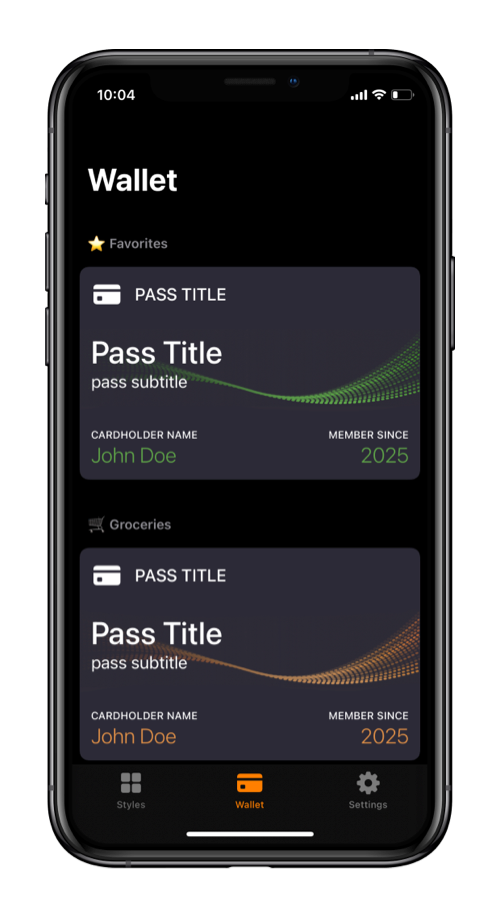
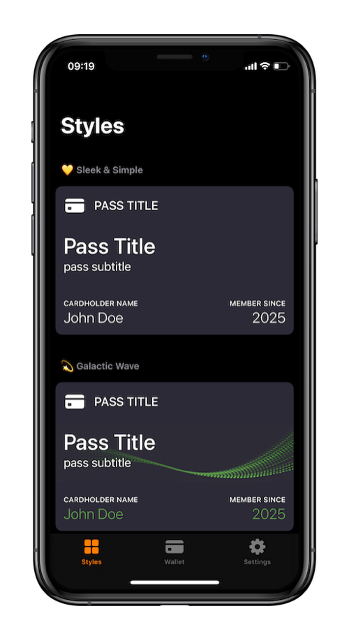

Apple Wallet Pass Generator for iPhone
PassX helps you create Apple Wallet passes from barcodes and QR codes. Scan a card, customize the pass, and add it to Apple Wallet in seconds.
 Download on the App Store
Download on the App Store
PassX helps you create Apple Wallet passes from barcodes and QR codes. Scan a card, customize the pass, and add it to Apple Wallet in seconds.

Turn store rewards cards into Apple Wallet passes you can scan at checkout.
Learn moreCreate wallet passes for clubs, libraries, organizations, and member IDs.
Save coupon barcodes or QR codes in Wallet so they are ready when needed.
Keep ticket codes in Apple Wallet for faster access at the entrance.
Move frequently used shop cards out of your physical wallet.
Keep access codes and member numbers easy to find on your iPhone.
Use your iPhone camera to scan a card, coupon, ticket, or code, or enter the value manually when scanning is not available.
Choose a pass style, add useful details, and make the pass easy to recognize when you open Apple Wallet.
Save the finished pass to Apple Wallet and keep it available on your iPhone whenever you need to scan it.

An Apple Wallet pass generator helps create a pass file that can be added to Apple Wallet. PassX makes this practical on iPhone by turning barcode and QR code information into compatible wallet passes.
Yes. PassX can create Apple Wallet passes from many common barcode types. You can scan a barcode with your iPhone or enter the code manually.
Yes. PassX supports QR code passes, so you can keep QR-based cards, coupons, tickets, and access codes in Apple Wallet.
Yes. PassX is useful for creating Apple Wallet passes for loyalty cards, store cards, membership cards, and similar everyday cards.
Yes. PassX is an iOS app for iPhone and creates passes that are compatible with Apple Wallet.
No. PassX is not an official Apple app. It helps users create compatible passes for Apple Wallet on iPhone.
No. PassX is designed for individual iPhone users who want to create wallet passes from their own barcodes, QR codes, and card details.
Your pass data stays on your device. When a pass is added to Apple Wallet, PassX sends only anonymous metadata to a secure server for the required signing step, and it is not stored or logged.
Create Apple Wallet passes from barcodes and QR codes, then keep them ready on your iPhone.